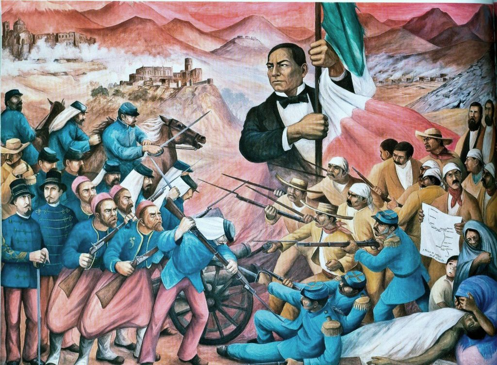

Batalla 5 de Mayo
Ver más

Puebla fue un punto clave para la historia del país, por lo que este museo interactivo revive de forma didáctica la batalla del 5 de Mayo de 1862 en la zona de Los Fuertes, el mismo escenario donde se desarrollaron estos hechos.
-
Batalla 4 de Mayo
-
Batalla 5 de Mayo
-
Inicio del Conflicto
-
Monumentos de la batalla
-
Héroes de la batalla
Además
En gandhi ya se encuentra disponible el libro titulado: LA HORA DE LA VERDAD "LA BATALLA 5 DE MAYO"
Aplicacion Seis
Andrea Trujillo Machorro
4 DE MAYO
La historia de la Batalla del 4 de Mayo de 1862 relata que, durante la segunda intervención francesa en México, en la hacienda de La Trapera, los atlixquenses y elementos del Ejército Mexicano, al mando de los generales Antonio Carvajal y Tomas O´Horan se enfrentaron a las tropas al servicio del Segundo Imperio Mexicano comandadas por José María Cobos y Leonardo Márquez. Y que, gracias a este triunfo, el grupo conservador de Márquez no pudo lograr su objetivo de auxiliar al día siguiente a las tropas francesas del Conde de Lorencez en la Batalla de Puebla.

Aplicacion Seis, ATM
5 DE MAYO
El 5 de mayo es una fecha muy importante para todos los mexicanos. El cinco de Mayo se conmemora el día de la Batalla de Puebla, en la cual el ejército mexicano venció al ejército francés. Cada ano se celebra en México, con orgullo y pasión, esta victoria con grandes festejos..
Antecedentes de la Batalla de Puebla : una guerra costosa
En 1857, ocurrió la Guerra de Reforma : un conflicto armado donde los liberales afrontaron los conservadores para impedir que la nueva constitución restituya a los militares y a la Iglesia los privilegios que habían perdido con las Leyes de Reforma. Benito Juárez, gobernador de Oaxaca al momento del conflicto, representaba a los liberales y Ignacio Comonfort, presidente de la República, representaba a los conservadores. Despues de 3 años, a principio del año 1961, los liberales ganaron la guerra y el Presidente Benito Juárez instauró su gobierno en la Ciudad de México. Pero despues de 3 años de conflicto, México está financieramente en ruinas y tiene deudas enormes que los conservadores contrataron con banqueros europeos para pagar la guerra. La deuda era de 80 millones de pesos; 69 millones para los ingleses, 9 millones para los españoles y 2 millones para Francia..
La ilusión de un acuerdo entre México y sus acreedores
El presidente Benito Juárez declaró el 17 de julio de 1861, una moratoria de dos años en el pago de deudas a prestamistas extranjeros. Posteriormente, en octubre de ese mismo año, Francia, Inglaterra y España acordaron intervenir la República para exigir el pago de sus deudas. En octubre de 1861, Francia, Inglaterra y España firmaron la Convención de Londres, en la cual se comprometieron a enviar contingentes militares a México. La Alianza Tripartita amenazó al presidente Benito Juárez con invadir el país si no se saldaba por completo las deudas con los tres países europeos..
Una victoria inesperada de las fuerzas mexicanas
A finales del año 1861, una enorme flota francesa de soldados bien equipados, bajo el mando de Charles Ferdinand Latrille,, irrumpió la ciudad de Veracruz para luego atacar la ciudad de Puebla de los Ángeles nada menos que con 6.000 tropas francesas. Sin embargo, el presidente Juarez sabía que había una guerra inminente y se organizó para proteger la Ciudad de México trasladando pertrechos y ordenando la fortificación de Puebla. Creo tambien al Ejército de Oriente y el hombre que se designó en el mando fue el general Ignacio Zaragoza. El ejercito mexican contaba apenas 2.000 hombres, entre los que había unos pocos soldados y una gran cantidad de indígenas y guerreros de ascendencia mixta dispuestos a dar todo por su suelo. Ampliamente superados, sin preparación alguna y con una escasa administración, los combatientes mexicanos se dirigieron al frente de batalla.

Aplicacion Seis, ATM
LA HISTORIA DE LA BATALLA DE PUEBLA

Antes del 5 de Mayo el día 28 de abril de 1862, tuvo lugar un enfrentamiento conocido como la Batalla de las Cumbres entre el Ejército Expedicionario Francés y el Ejército Mexicano. En este conflicto hubo cerca de 500 bajas francesas en contra de apenas 50 bajas mexicanas. El 2 de mayo parte el Ejército Expedicionario Francés desde San Agustín del Palmar en Veracruz con rumbo a cruzar la Sierra Madre Oriental y dirigirse hacia Puebla, era paso obligado para llegar a la capital mexicana. Otros generales mexicanos también participaron en la defensa de Puebla como es el caso de las tropas de Oaxaca dirigidas por Porfirio Díaz. El centro de la línea lo defendió Francisco Lamadrid con las tropas del Estado de México y San Luis Potosí. La izquierda se apoyó en el cerro de Acueyametepec, ubicado en el norte de la ciudad, y en cuya cumbre están los Fuertes de Loreto y Guadalupe, con el general Miguel Negrete a la cabeza de la Segunda División de Infantería.
°El 5 de mayo, a las 9 de la manana, aparecen los franceses en el horizonte, pero es hasta las 11 de la manana cuando comienzan las hostilidades, anunciándose con un cañonazo desde el Fuerte de Guadalupe y acompañado por los repiques de las campanas de la ciudad.
°El conde de Lorencez ordena una maniobra sorpresiva que divide a la columna francesa en dos; eran 4,000 hombres marchando para atacar los Fuertes de Loreto y Guadalupe.
°El 6o. Batallón de la Guardia Nacional del Estado de Puebla, bajo el mando del coronel Juan Nepomuceno Méndez, fue el primer cuerpo del Ejército de Oriente en hacer frente a los franceses y rechazar el ataque.
°Varios embates franceses fueron repelidos por la resistencia del Ejército Mexicano como es el caso de los zuavos (originarios de Argelia), el regimiento de élite de la infantería francesa, quienes iniciaron un cauteloso ascenso hacia el Fuerte de Guadalupe, pero fueron recibidos con bayonetas y obligados lo franceses a retroceder.
°A las 2h30 de la tarde, cuando los mexicanos empezaban a vislumbrar la victoria, Lorencez se dispuso a lanzar el último asalto, dirigiendo a los Cazadores de Vincennes y el Regimiento de Zuavos hacia Guadalupe. Zaragoza dispuso que el Batallón Reforma de San Luis Potosí saliera en auxilio de los fuertes.
°Luego de ser repelidos por última vez, las fuerzas del Ejército Expedicionario Francés comenzaron a huir completamente dispersados. Se replegaron a la hacienda Los Álamos, para finalmente retirarse hacia Amozoc. El día 5 de mayo de 1862, tras una de las más duras batallas de la historia, la cual duró desde el amanecer a la tarde, los franceses terminaron por retirarse. El saldo fue de más de 500 bajas en las líneas francesas contra apenas unas 100 en las mexicanas.
El día 5 de mayo de 1862, tras una de las más duras batallas de la historia, la cual duró desde el amanecer a la tarde, los franceses terminaron por retirarse. El saldo fue de más de 500 bajas en las líneas francesas contra apenas unas 100 en las mexicanas. Éste hecho se convirtió en un fuerte símbolo de la resistencia y del poder mexicano, representando justamente una victoria simbólica contra los grandes imperios.
Aplicacion Seis, ATM
MONUMENTOS
Monumento 5 de Mayo

La historia del Monumento a la Victoria
El reciclaje consiste en obtener una nueva materia prima o producto, mediante un proceso fisicoquímico o mecánico, a partir de productos y materiales ya en desuso o utilizados. De esta forma, conseguimos alargar el ciclo de vida de un producto, ahorrando materiales y beneficiando al medio ambiente al generar menos residuos.El reciclaje surje no sólo para eliminar residuos, sino para hacer frente al agotamiento de los recursos naturales del planeta.
El Monumento a la Victoria del 5 de Mayo fue construido por el escultor Ernesto Tamariz, del estado de Puebla. También participaron en su construcción los arquitectos Vicente Mendiola y Everardo Morales, su creación costando millón y medio de pesos.
La temática representada en el Monumento a la Victoria es, en definitiva, nacionalista, siendo una estructura cívica con gran significado. El caballo simboliza poder, mientras que su musculatura denota fuerza, además que no hay personajes que se muestren siendo hieráticos. Es decir, ninguno es solemne, inexpresivo o estático, lo que denota fluidez, un elemento crucial para los batallones de combate.
A pesar de su belleza y estructura, la locación del Monumento a la Victoria propició que cayera en notorio desuso. Su locación dentro de una plazoleta con muy poca área verde cerca del Fuerte de Guadalupe no fue la ideal. Por ello, se le dio poco mantenimiento a la obra, la cual estuvo en abandono hasta hace unos cuantos años. Sin embargo, su belleza fue restaurada para que al fin pueda ser tanto reconocida como disfrutada por todos los visitantes.
Aplicacion Seis, ATM
HÉROES
Héroes de la batalla

 10
10Por escrito quedó y por ello no hay duda. En vísperas de la batalla, el general Charles Ferdinand Latrille, conde de Lorencez, comandante de las tropas francesas que invadían México por segunda ocasión, dirigió una carta al ministro de Guerra de Francia en la que le decía: Tenemos sobre los mexicanos tal superioridad de raza, organización, disciplina, moralidad y elevación de sentimientos, que os ruego digáis al emperador que a partir de este momento y a la cabeza de seis mil soldados, ya soy el amo de México . No tenía idea de que su castigo el pez por la boca muere sería tan definitivo como inmediato. Corría el año de 1862. Francia, Inglaterra y España habían declarado la guerra a México aduciendo una deuda de 80 millones de pesos. El presidente Juárez había respondido con un exhorto para lograr un acuerdo amistoso, pero fue inútil. La alianza tripartita amenazó con una invasión inminente si no se saldaban por completo las deudas. Pero al no haber dinero en las arcas no hubo nada que hacer. Juárez suspendió el pago de la deuda externa, los franceses enviaron cuadrillas militares con la bendición y los generales de Napoleón III. El ejército más poderoso del mundo venía a enfrentarse al nuestro. Fue entonces cuando Ignacio Zaragoza renunció al cargo de ministro de Guerra y Marina que le había dado Juárez, para ponerse a frente del recién formado Ejército de Oriente. Su misión: vencer al enemigo, proteger a la Ciudad de México y conservar intacto el territorio de la República liberal de Juárez.